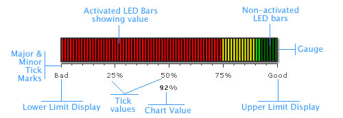

| Elements of the gauge |
A LED gauge consists of the following elements: Here we’ll see each of them in detail. Let’s first have a look at a standard LED Gauge enlisting the various basic components: |
|  |
The LED gauge is defined by minimum and maximum values. Within that scale you can create various ranges to classify your data. There can be any number of ranges as you wish to. For each range, you’ll have to specify the minimum and maximum limits, a name for the range and the hex color for the range. In the above chart, we have the chart with upper limit as 100 and lower limit as 0. And the color ranges are 0-30, 30-50 and 50-120.
The LED bars are the actual data indicators in a LED gauge. The LED bars fill up the LED container in a ratio that suggests the chart value. A number of configurable properties of LED bars are later discussed.
Tick marks are the calibration marks on the horizontal (or vertical for the vertical LED) scale to help interpret the reading. There are two types of tick marks which can be drawn on the chart:
For all the tick marks, you can specify the color and the height. The chart value indicates the value of the gauge in numeric terms. Annotations allow you to draw your own custom shapes, text, or load images on the chart.Let’s now have a look at the XML required to create a LED gauge. |